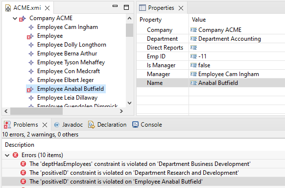

Using Epsilon for Ecore Validation, Setting and Invocation Delegation¶
Note
This Feature is available in versions >= 2.5.0
EMF provides three delegation mechanisms that enable functionality not directly supported by EMF to be delegated to a technology that can support it.
- Validation Delegate supports checking additional invariants on an EClassifier
- Setting Delegate supports getting an initial or derived computed value for an EStructuralFeature
- Invocation Delegate supports the execution of a function defined by an EOperation
Epsilon supports using EOL for setting and invocation delegation and EVL for validation delegation. Delegate registration and delegate implementation are added to the Ecore model via EAnnotations.
Delegate Registration¶
The provided EOL/EVL implementations become active when the appropriate delegate functionality is registered for a given EPackage. In practice, all three delegations should be registered.
Setting Delegate¶
The setting delegate is specified by adding an EAnnotation to the EPackage with the following values:
source = "http://www.eclipse.org/emf/2002/Ecore"
key = "settingDelegates"
value = "http://eclipse.dev/epsilon/ecore/EOL"
Note
When generating the java classes from your genmodel, remember to set the genmodel option root->Model->'Feature Delegation' to something other than None (the specific type depends on your needs).
Invocation Delegate¶
The invocation delegate is specified by an EPackage EAnnotation with:
source = "http://www.eclipse.org/emf/2002/Ecore"
key = "invocationDelegates"
value = "http://eclipse.dev/epsilon/ecore/EOL"
The delegate value matches an org.eclipse.emf.ecore.invocation_delegate extension point usage in the org.eclipse.ocl.ecore plug-in that provides the delegate functionality. Multiple comma-separated delegates may be specified.
Note
When generating the java classes from your genmodel, remember to set the genmodel option root->Model->'Operation Reflection' to true. (From EMF 2.8 onwards, true is the default.)
Validation Delegate¶
The validation delegate is specified by an EPackage EAnnotation with:
source = "http://www.eclipse.org/emf/2002/Ecore"
key = "validationDelegates"
value = "http://eclipse.dev/epsilon/ecore/EVL"
EOL Setting Delegation¶
A setting delegate is invoked to provide the derived value of an EStructuralFeature. Folowing the guidelines of the Eclipse Modeling Framework book, EOL Setting Delegation will only work for derived EStructuralFeature that are volatile, transient and non-changeable.
Warning
EStructuralFeatures using Setting Delegation for derived value calculation must belong to an EClass inside an EPacakge for which the Epsilon Setting Delegate has been registered.
Implementing Derived features with EOL¶
The setting delegate is provided by an EAnnotation on the EStructuralFeature:
source = "http://eclipse.dev/epsilon/ecore/EOL"
key = derivation
value = EOL expression
The EOL expression is evaluated to provide the EStructuralFeature value with the containing EClassifier instance (EObject) assigned to the special variable self. The EOL expression must be a valid EOL expression (i.e., no syntax errors) and the runtime result type of the EOL expression must conform to the type of the EStructuralFeature.
EOL Invocation Delegation¶
The invocation delegate is provided by an EAnnotation on the EOperation:
source = "http://eclipse.dev/epsilon/ecore/EOL"
key = body
value = body EOL expression
The body EOL expression is evaluated to provide the EOperation value with the containing EClassifier instance (EObject) assigned to the special variable self and one variable for each EParameters. The body EOL expression of the contraint must be a valid EOL operation body, i.e., no syntax errors, and have a return statement. The runtime result type of the return statement must be boolean.
EVL Validation Delegation¶
Validation delegation allows to specify contraints for an EClassifier and consists of two parts:
- List of constraints
- Constraint implementaiton
Warning
EClassifiers that provide EVL constraints, must be owned by an EPacakge for which the Epsilon Validation Delegate has been registered.
Specifying Constraints¶
All Ecore constraints must be listed in an EAnnotation on the EClassifier
source = http://www.eclipse.org/emf/2002/Ecore
key = constraints
value = constraintName_1 constraintName_2 ... constraintName_n
Implementing Constraints with EVL¶
The validation delegate for each Ecore constraint is provided by either a further EAnnotation on the EClassifier or an EOperation in the EClassifier.
Via EAnnotation¶
The EVL constraint body (check) is specified by an EAnnotation on the EClassifier
source = "http://eclipse.dev/epsilon/ecore/EVL"
key = "constraintName_1"
value = EOL expression
The EOL expression is evaluated to validate the EClassifier instance (EObject) with the instance assigned to the special variable self. The EOL expression must be a valid EOL expression and the runtime result type of the EOL expression must be boolean.
Via EOperation¶
The EVL constraint can be defined by adding an EOperation to the EClassifier with the following signature:
EBoolean constraintName (DiagnosticChain diagnostics, EMap<EJavaObject, EJavaObject> context)
The EVL constraint body (check) is specified by an EAnnotation on the EOperation
source = "http://eclipse.dev/epsilon/ecore/EVL"
key = "body"
value = body EOL expression
The body EOL expression is evaluated to validate the EClassifier instance (EObject) with the instance assigned to the special variable self. The body EOL expression of the contraint must be a valid EOL operation body, i.e., no syntax errors, and have a return statement. The runtime result type of the return statement must be boolean.
Example¶
The following annotated EMF metamodel (expressed using Emfatic; an Ecore version is available here) shows how to use the Epsilon delegates:
First, we register the delegates in the EPacakge:
@Ecore(
validationDelegates="http://eclipse.dev/epsilon/ecore/EVL",
invocationDelegates="http://eclipse.dev/epsilon/ecore/EOL",
settingDelegates="http://eclipse.dev/epsilon/ecore/EOL")
@namespace(
uri="http://www.eclipse.org/OCL/examples/codegen/employee",
prefix="emp")
package employee;
class Company {
attr String name;
val Employee[*]#company employees;
val Department[*]#company departments;
}
...For the Department EClass, we defined three constraints implemented via EAnnotations, and the feature directReports as derived:
...
@Ecore(constraints="deptHasEmployees positiveID validName")
@"http://eclipse.dev/epsilon/ecore/EVL"(
deptHasEmployees="not self.manager.isUndefined() implies self.employees.notEmpty()",
positiveID="self.deptID > 0",
validName="not self.name.isUndefined() and self.name.length() > 0")
class Department {
ref Employee manager;
id attr int[1] deptID;
attr String name;
@"http://eclipse.dev/epsilon/ecore/EOL"(
derivation="if (self.manager.isUndefined()) {
return Sequence{};
} else {
return self.manager.directReports;
}")
!ordered readonly volatile transient derived ref Employee[*]#department employees;
ref Company#departments company;
}
...For the Employee EClass, we defined the validName constraint implemented via EOperation. The features isManager and department are derived. Last, the operations allReports, reportinChain and reportsTo are implemented with EOL.
...
@Ecore(constraints="positiveID validName")
@"http://eclipse.dev/epsilon/ecore/EVL"(
positiveID="self.empID > 0")
class Employee {
@"http://eclipse.dev/epsilon/ecore/EOL"(
body="return self.closure(t | t.directReports);")
!ordered op Employee[*] allReports();
@"http://eclipse.dev/epsilon/ecore/EOL"(
body="if (self.manager.isUndefined()) {
return Sequence{};
} else {
var result = Sequence {self.manager};
return result.includingAll(self.manager.reportingChain());
}")
op Employee[*] reportingChain();
@"http://eclipse.dev/epsilon/ecore/EOL"(
body="return self.reportingChain().includes(mgr);")
!ordered op boolean reportsTo(Employee mgr);
@"http://eclipse.dev/epsilon/ecore/EVL"(
body="not self.name.isUndefined() and self.name.length() > 0")
op boolean validName(ecore.EDiagnosticChain diagnostics, ecore.EMap<EJavaObject, EJavaObject> context);
@"http://eclipse.dev/epsilon/ecore/EOL"(
derivation="return self.directReports.notEmpty();")
readonly volatile transient derived attr boolean isManager;
@"http://eclipse.dev/epsilon/ecore/EOL"(
derivation="return self.company.departments.selectOne(d | d.employees.includes(self));")
readonly volatile transient derived ref Department#employees department;
ref Employee#directReports manager;
!ordered ref Employee[*]#manager directReports;
id attr int[1] empID;
attr String name;
ref Company#employees company;
}
Validation Results¶
The results of running the validation are shown in the following figure.

Derived Features¶
In the following figure, we selected one of the Employees that does not satisfy the positiveID constraint. We can also see that the isManager and department features values have been derived.
